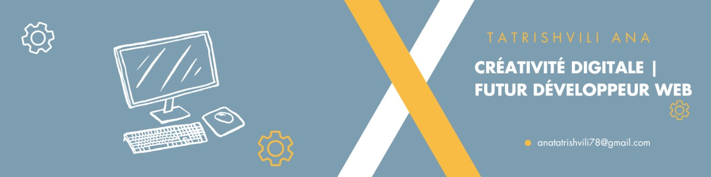

Bienvenue sur Portfolio de TATRISHVILI Ana
Je suis un développeur passionné créant des expériences web exceptionnelles
Mes projets
Je suis un développeur passionné créant des expériences web exceptionnelles
Mes projetsÉtudiante en BUT MMI (Métiers du Multimédia et de l'Internet) à l'IUT de Troyes, je suis passionnée par la création de contenus numériques innovants. Mon parcours m'a permis de développer des compétences solides en design, développement web et production vidéo.
Découvrez mes réalisations
Design d'identité visuelle et animation pour un cinéma

Création d'un logo minimaliste avec Illustrator, utilisant le coquelicot comme symbole de liberté. Typographie : Demo Melody Groove Regular. Ajout d'une pellicule de film pour lier tradition et modernité. Développement d'une animation SVG avec effet de zoom fluide. Le coquelicot représente la liberté d'expression, essentielle au cinéma.

Analyse sectorielle du cinéma UTOPIA, étude de son histoire et valeurs. Création d'un moodboard (2272 x 1278 px) sur Photoshop, intégrant des éléments écologiques (vert, jaune) et vintage (rouge, jaune) pour refléter l'identité du cinéma. Fusion réussie entre tradition et modernité.
Développement de pictogrammes vectorisés dans une grille pour la symétrie, respectant les règles d'ergonomie et d'accessibilité. Création d'un système de design cohérent pour l'ensemble de l'identité visuelle. Optimisation pour différentes tailles d'affichage.

Création de mockups pour des supports marketing (chapeaux, sacs en tissu) ciblant le public jeune. Intégration du logo avec Photoshop. Définition des zones de sécurité et règles d'utilisation de l'identité visuelle. Design adapté aux différents supports.
Un voyage virtuel à travers la culture et l'histoire géorgienne
Design moderne et responsive de la page d'accueil, présentant les points d'intérêt principaux de la Géorgie. Intégration d'animations fluides et d'une navigation intuitive.

Présentation visuelle des lieux et monuments de Géorgie avec une galerie interactive. Optimisation des images pour un chargement rapide et une expérience utilisateur optimale.

Formulaire de contact interactif avec validation JavaScript. Intégration de Google Maps et des informations de communication. Design responsive et accessible.
Section dédiée aux partenaires avec présentation des collaborations. Intégration de contenu riche sur l'histoire du vin et l'alphabet géorgien. Design cohérent avec l'identité visuelle.
Création d'une interview vidéo professionnelle avec techniques de prise de vue et montage
Réalisation d'une interview vidéo professionnelle au Technopôle de Troyes, mettant en valeur le parcours d'un entrepreneur. Utilisation de techniques avancées de prise de vue, d'éclairage et de montage pour créer une narration engageante et fluide.
La phase cruciale de préparation d'un tournage, montrant l'attention aux détails et l'organisation nécessaire pour une production réussie. Mise en place du matériel, vérification de l'éclairage et des paramètres de la caméra.

Processus de montage professionnel sur Adobe Premiere Pro, incluant le découpage des séquences, l'ajout de transitions fluides, et l'optimisation de la qualité audio et vidéo pour un rendu final de haute qualité.
Guitariste Solo & Organisatrice d'Événements (2023, Géorgie)
En Géorgie en 2022, j'ai intégré le groupe de musique de mon lycée en tant que guitariste solo et organisatrice d'événements. Notre objectif était de créer une plateforme durable pour les jeunes musiciens en organisant des concerts annuels, des spectacles de talents et un carnaval scolaire, tout en développant notre répertoire musical.
Design d'identité visuelle et animation pour un cinéma
Analyse sectorielle du cinéma UTOPIA, étude de son histoire et valeurs. Création d'un moodboard (2272 x 1278 px) sur Photoshop, intégrant des éléments écologiques (vert, jaune) et vintage (rouge, jaune) pour refléter l'identité du cinéma. Fusion réussie entre tradition et modernité.